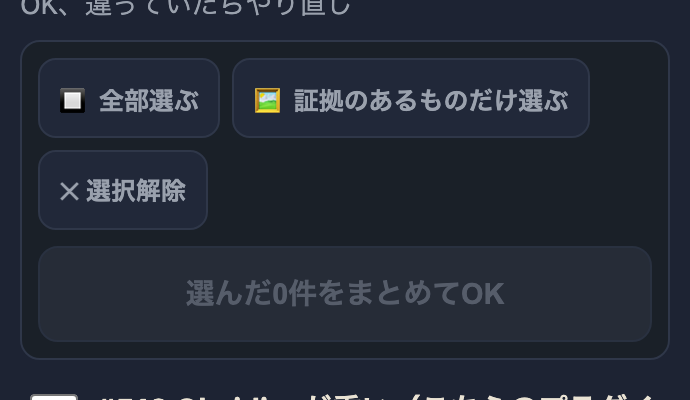
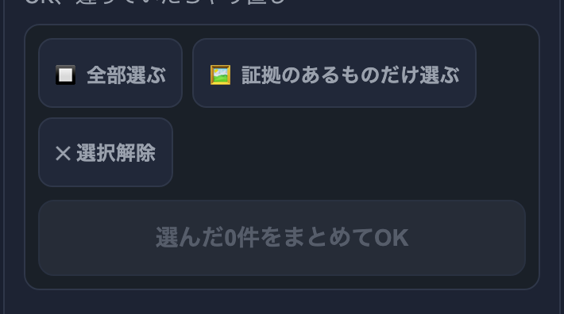
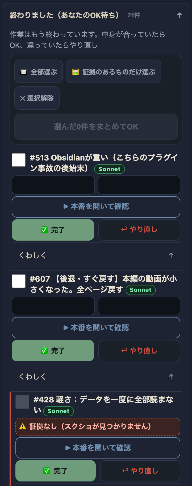
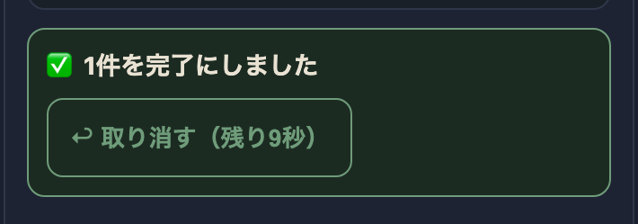

| 確認項目 | 結果 |
|---|---|
| チェックボックスのタップ領域(36px→44px) | 44px・親指の目安を達成 |
| 全部選ぶ／証拠のあるものだけ選ぶ／選択解除ボタン(40px→44px) | 44px・親指の目安を達成 |
| まとめてOKボタン | 48px・元から基準達成 |
| 取り消すボタン(40px→44px) | 44px・親指の目安を達成 |
| 赤(証拠なし)行のチェックボックス無効化 | disabled表示を確認・まとめてOKの事故防止が機能 |